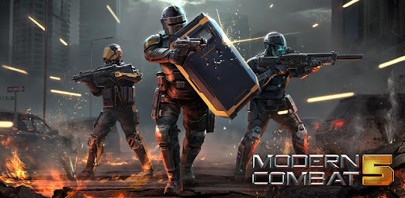

Modern Combat 5: Blackout

Modern Combat 5: Blackout é um jogo de tiro em primeira pessoa desenvolvido pela Wil Lane Bucareste e publicado pela Gameloft. É a quinta edição da série Modern Combat, é a sequência de Modern Combat 4: Zero Hour. Ele foi lançado no dia 24 de julho, 2014 para iOS, Android, Windows Phone 8, Windows 8.1 e BlackBerry. É o primeiro jogo da série Modern Combat grátis em todas as plataformas, exceto para BlackBerry, por que isso foi implantado em uma atualização que não esta disponível no BlackBerry.
Prepare para encarar um novo modo campanha. Agora, ao invés de missões longas, Modern Combat apresenta missões curtas e divertidas. São dezenas de missões com até 10 minutos de duração, onde você precisará lutar para conseguir a melhor pontuação possível. Concluindo os objetivos de cada fase, o jogador desbloqueia equipamentos para serem utilizados nas armas e novas classes para o soldado.